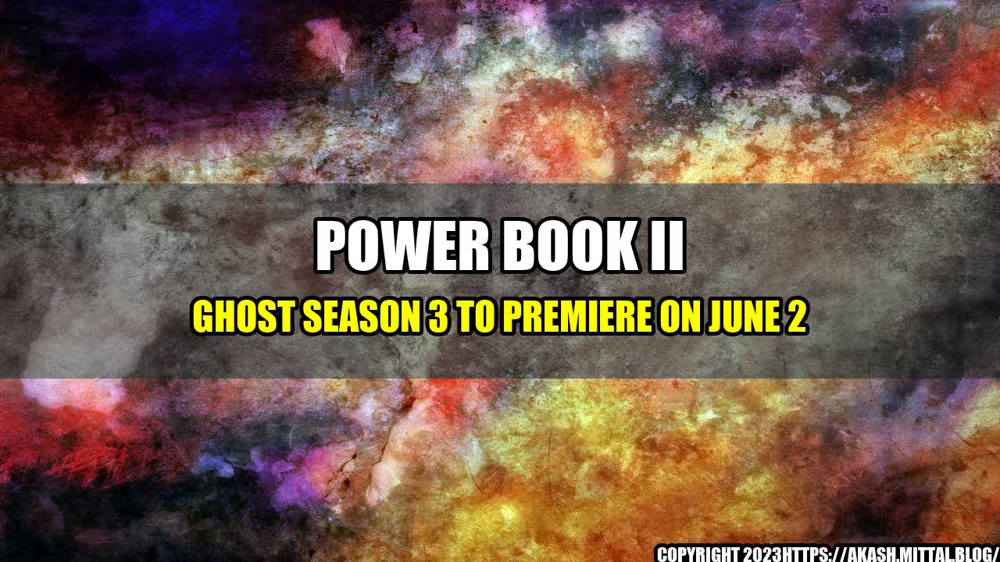

Power Book II Ghost Season 3 to Premiere on June 2
Are you ready for the next chapter of the Power universe? Fans of the popular crime drama series will be thrilled to learn that the third season of Power Book II Ghost is set to premiere on June 2.

For those who may not be familiar with the show, Power Book II Ghost is a spin-off of the hit series Power, which chronicles the double life of James "Ghost" St. Patrick, a wealthy businessman who is also the kingpin of a drug empire. In the spin-off, we follow Tariq St. Patrick, Ghost's son, as he navigates his new life as a college student and drug lord.
Since its premiere in September 2020, Power Book II Ghost has been a ratings success for Starz, the network that airs the show. According to Nielsen, the show was one of the top 10 most-streamed original series on streaming platforms in April 2021. It also ranked as the top cable scripted drama among African American viewers aged 18-49.
But its success isn't just limited to ratings. Power Book II Ghost has also earned critical acclaim, with many praising its strong performances and compelling storylines. It has been nominated for several awards, including the NAACP Image Award for Outstanding Drama Series and the BET Award for Best Female Lead.
What to Expect from Season 3
Without giving away too many spoilers, here are a few hints of what viewers can expect from the upcoming season:
- A possible rekindling of the romance between Tariq and his ex-girlfriend Diana, who is also the daughter of a rival drug lord.
- The return of Monet, the cunning matriarch of the Tejada crime family, who will stop at nothing to protect her empire.
- The introduction of new characters, including several members of the Tejada family.
- A deeper exploration of Tariq's relationship with his mother, Tasha, who is currently serving time in prison for a crime Tariq committed.
Of course, fans can also expect plenty of twists and turns, as Power Book II Ghost is known for its shocking plot twists and cliffhangers. Executive producer Courtney A. Kemp has promised that the third season will be "bigger and badder" than ever before.
Conclusion
In conclusion, if you're a fan of crime dramas with complex characters and intricate plotlines, then Power Book II Ghost is definitely worth checking out. With its strong ratings, critical acclaim, and exciting storylines, it's no surprise that the upcoming season is highly anticipated by viewers.
To stay up-to-date on the latest news and information about the show, be sure to follow these hashtags and reference URLs:
Hashtags
- #PowerBookIIGhost
- #Season3Premiere
- #PowerUniverse
- #Starz
- #CrimeDrama
Curated by Team Akash.Mittal.Blog
Share on Twitter Share on LinkedIn